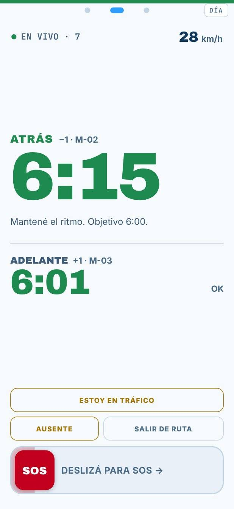
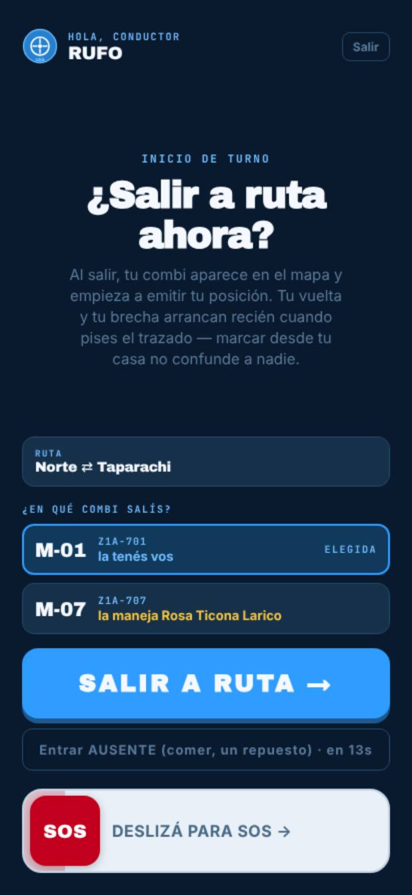
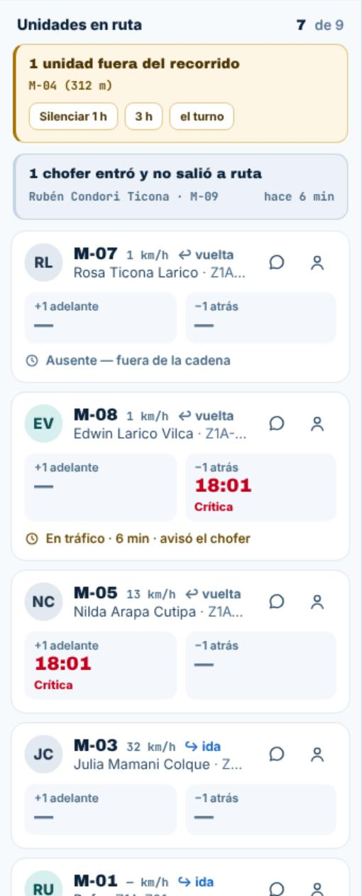
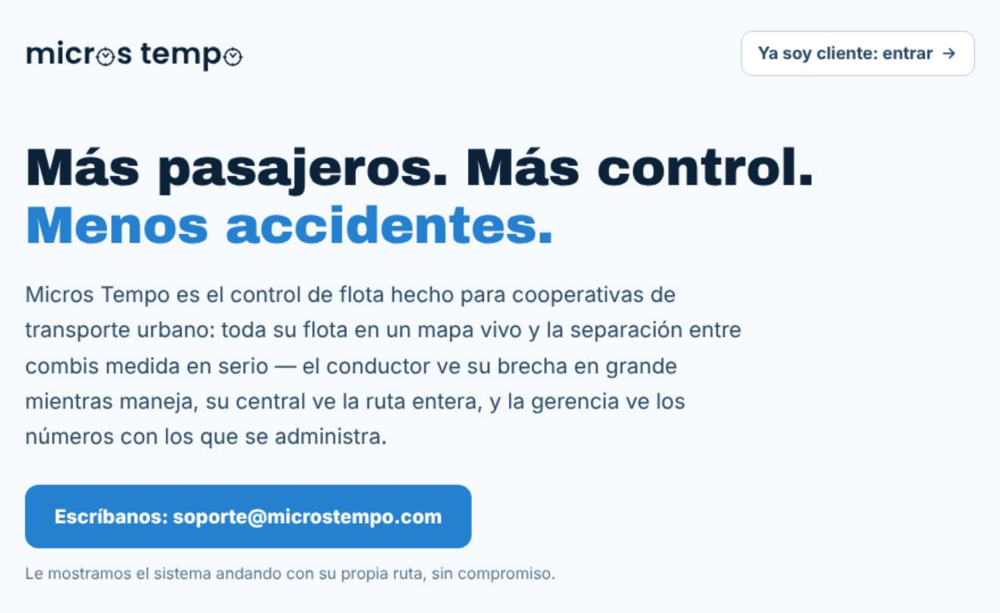
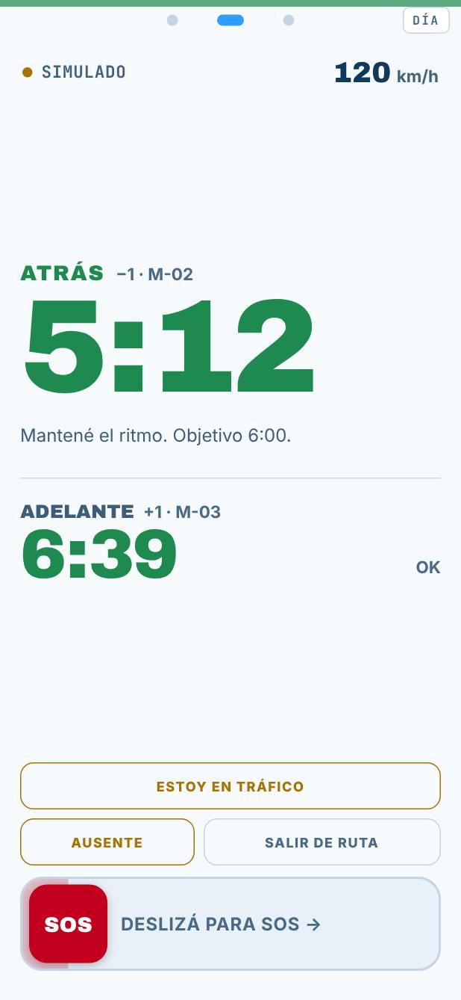
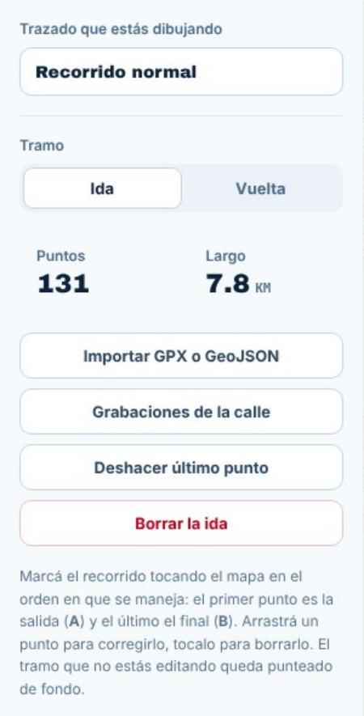
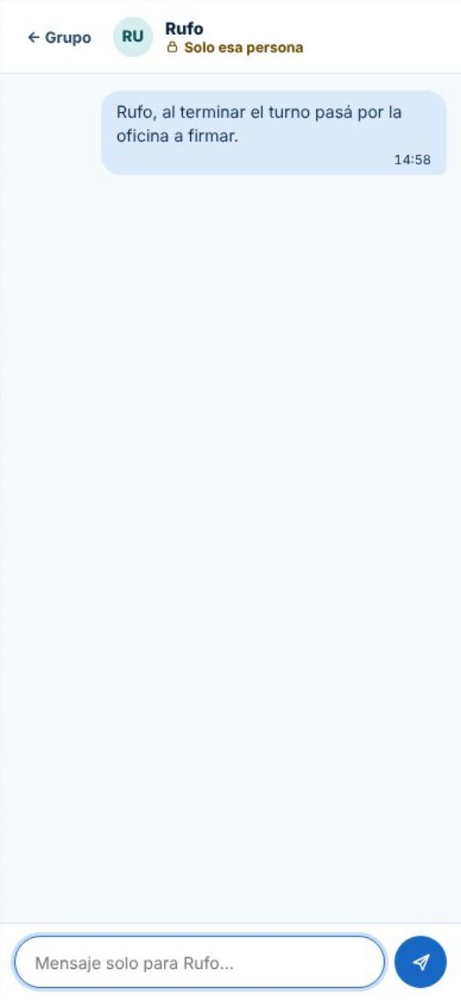

Acompañan a AUDITORIA-UI-2026-11-16.md. Cada bloque enfrenta lo que hay hoy con una propuesta, y abajo dice qué archivos tocaría y si mueve el backend. Los identificadores (B3, C1, N1…) son los del informe. Del 1 al 7 es apariencia y movimiento; del 8 al 10, comportamiento (qué entiende la persona y cómo se recupera de un error).
HOY captura real del sistema andandoRECONSTRUCCIÓN armada desde el código, no vista corriendoPROPUESTA maqueta con los tokens que ya existen
B3
Las acciones del chofer: más grandes, legibles y sin compartir señal
El chofer las toca manejando. Hoy miden 42 px con letra de 12 px a 3,95:1, y «Estoy en tráfico» y «Ausente» se ven iguales aunque una avisa y la otra descarta la vuelta.
HOY project/Prototipo.html · tema día

Botones de 42 px de alto y texto de 12 px: bajo la meta de 44 px y con ámbar a 3,95:1 (el mínimo para ese tamaño es 4,5).
Tráfico y Ausente usan el mismo contorno ámbar: una señal, dos significados.
Ausente descarta la vuelta con un solo toque, pegado al botón de tráfico. «Salir de ruta» sí pide dos.
Quedan ~150 px de aire arriba del número mientras las acciones van apretadas abajo.
PROPUESTA toca los botones: se puede probar
DÍA
EN VIVO · 728 km/h
ATRÁS−1 · M-02
6:15
Mantené el ritmo. Objetivo 6:00.
ADELANTE+1 · M-03
6:01
OK
SOS
DESLIZÁ PARA SOS →
56 px de alto, 16 px de letra. Tinta amberInk sobre el fondo: 11,47:1. El borde ámbar se queda para decir «tráfico».
Ausente y Salir pasan a contorno neutro: son las dos que te sacan de la cadena.
Ausente espera 5 s con «Deshacer» antes de avisar al servidor: un toque sin querer no cuesta la vuelta.
«Salir de ruta» se arma a los 0,6 s: un doble toque sin querer no alcanza a confirmar (N2). Despacho ya hace esto con la baja.
El número, el orden y el SOS quedan intactos. El bloque central absorbe los 28 px extra.
Impacto en el código
Pantalla:project/Prototipo.html (CenterScreen, ~líneas 2707–2760) y, si se replica, app/App.js (botonTrafico, botonPresencia). Subir CACHE_NAME.
Backend: ninguno. El «Deshacer» retrasa en el cliente el POST de presencia; el servidor recibe lo mismo, 5 s después.
Pruebas: las que tocan «AUSENTE» en el navegador (presencia, ausencia, relevo, trafico) tienen que esperar esos 5 s o usar un atajo de prueba. Los textos no cambian.
B1 · B2 · B4 · B5 · B6 · B8
El movimiento del HUD: que avise cuando algo cambia, no todo el tiempo
A la izquierda, los keyframes y cadencias que están hoy en el código. A la derecha, la propuesta. Cambia el estado y mira qué se mueve en cada lado y por cuánto tiempo.
Brecha:
HOY reconstrucción con los keyframes de Prototipo.html
ATRÁS−1 · M-02
ADELANTE+1 · M-036:01
SOS
DESLIZÁ PARA SOS →
La barra de arriba late siempre, también en verde (cada 2,4 s; 1,4 s en ámbar; 0,8 s en rojo).
Cada dígito que cambia salta 2 px y se atenúa: pasa cada pocos segundos, todo el turno.
Con la brecha en rojo, un anillo rojo late sobre el SOS: mezcla «pelotón» con «emergencia».
Si el lado que manda cambia, los rótulos se intercambian sin ninguna señal.
Al enviar, el pulgar muestra ✓ mientras el texto todavía dice «ENVIANDO…».
Nada de esto se apaga con «reducir movimiento» del teléfono (medido: 2 animaciones infinitas vivas).
PROPUESTA
ATRÁS−1 · M-02
ADELANTE+1 · M-036:01
SOS
DESLIZÁ PARA SOS →
La barra queda fija. Al cambiar de estado avisa tres veces (1,8 s) y se queda quieta con el color nuevo.
El número crece una vez (320 ms) solo cuando cambia el estado; segundo a segundo no se mueve.
El SOS no late nunca: su señal es su forma y su rojo.
Cuando el lado que manda cambia, el rótulo queda resaltado 1,6 s (un fundido, sin desplazamiento).
El pulgar muestra «…» mientras envía y ✓ recién cuando el servidor confirma.
Con movimiento reducido no hay escala ni latido; quedan el color, la frase y el resalte del rótulo.
Impacto en el código
Pantalla: solo project/Prototipo.html: combiEdge (línea 2549), suggestSos (1581), AnimatedDigit (2424), el pulgar de SosSlider (1651) y el valor inicial de tweaks.microAnims (2397), que pasa a leer prefers-reduced-motion.
Backend: ninguno. El ✓ ya depende de la promesa de onFire; solo cambia cuándo se dibuja.
Pruebas:sos.js y sos-sin-red.js si miran el texto del pulgar. Subir CACHE_NAME.
Es hipótesis: que la barra fija se lea igual de bien de reojo se comprueba en la calle, no aquí.
B7
La puerta «Salir a ruta» sigue al tema, como ya hace el ingreso
Desde el retoque del 11/11 el ingreso es claro y el HUD es claro; en el medio queda una pantalla azul oscuro fija, con su botón principal a 2,69:1.
HOY paleta fija P, no sigue el tema

«SALIR A RUTA»: blanco sobre #2E9DFF = 2,69:1. No llega ni al 3:1 de texto grande.
Párrafo, «Salir» y «Entrar AUSENTE» en #5A7A99 sobre azul oscuro: 3,90:1.
Ocho textos de 9 a 11 px en mono con tracking (ruta, placa, «ELEGIDA»…).
«Salir» mide 48×29 px.
PROPUESTA mismos datos, tokens HUD del tema activo
Hola, conductor
RUFO
Inicio de turno
¿Salir a ruta ahora?
Tu vuelta y tu brecha arrancan cuando pises el trazado.
RutaNorte ⇄ Taparachi
¿En qué combi salís?
M-01Z1A-701 la tenés vos✓ Elegida
M-07Z1A-707 la maneja Rosa Ticona Larico
SOS
DESLIZÁ PARA SOS →
Botón principal con acento/acentoInk: 5,51:1 de día, 7,14:1 de noche.
Texto secundario en fg2 (9,07:1) y rótulos de 13–14 px en la sans, como el ingreso.
De noche sigue saliendo oscura: es el mismo tema automático del resto de la app.
El párrafo se acorta a lo que cambia una decisión; el chofer lo ve todas las mañanas.
Impacto en el código
Pantalla:StartRouteScreen en project/Prototipo.html (líneas 2105–2395): ~30 referencias a P.* pasan a HUD.*. Sin tokens nuevos.
Backend: ninguno.Documentos:LIMITACIONES.md:330 dice que login y puerta son oscuras «a propósito»; el login ya no lo es, hay que actualizar la línea.
Pruebas:puerta-web, vigia-puerta, sos-puerta buscan textos y data-*, que no cambian. Captura c02-* del manual a rehacer.
A1 · A2 · A3
La APK: el «día» sigue siendo oscuro y varios textos no pasan el mínimo
La web del chofer ya se pasó a claro con contraste medido. La app nativa —la que de verdad va al parabrisas— quedó con la paleta azul oscuro. El repo tiene las dos respuestas a la misma pregunta.
HOY desde app/tema.js y crearEstilos(); no vista corriendo
Un solo juego de temas para la web y la APK: day, sun, night, con la misma vara de contraste.js.
El diagnóstico de GPS aparece solo si hay algo que avisar; el resto se va a Perfil.
Se entrega por EAS Update (es JavaScript): no hace falta una APK nueva.
Antes de decidir: el mismo teléfono al mediodía en el parabrisas, con las dos paletas. Esa prueba manda sobre esta maqueta.
Impacto en el código
App:app/tema.js (paletas y nombres de token), crearEstilos() en app/App.js (29 usos de tenue y 6 literales), app/mapa.js (hoy fuerza el mapa oscuro, líneas 169 y 258–265).
Backend: ninguno. El servidor ya sirve el mapa propio en estilo claro y oscuro; la web lo usa así.
Pruebas:pruebas/tema.js comprueba la regla horaria, las claves y que la noche sea más oscura, pero no mide pares de texto; contraste.js solo mira la web. Hay que sumar la paleta nativa a esa vara.
Decisión del dueño:app/README.md documenta lo oscuro como rasgo de diseño. Esto lo contradice a propósito; por eso va con prueba de campo.
C1 · C2 · C3
Despacho: la cadena completa a la vista, sin desplazar
La tarea de quien despacha es comparar brechas entre unidades. Con tarjetas de ~150 px entran cuatro o cinco de nueve; las celdas vacías ocupan lo mismo que las llenas.
HOY columna izquierda a 1440×900

Se ven 4 de 7 unidades; el resto, desplazando.
«+1 adelante» y «−1 atrás» se repiten en cada tarjeta y los números no quedan en columna.
El nombre se corta («Rosa Ticona Larico · Z1A…») por mostrar la placa.
46 textos de 11 px en una pantalla de ocho horas; «en ruta», «en línea» y «Al límite» en verde/ámbar a 4,1–4,4:1.
PROPUESTA mismo ancho y alto · datos de ejemplo
Unidades en ruta7 de 9
⚠ 1 unidad fuera del recorrido · M-04 (312 m)
Rubén Condori (M-09) entró y no salió · 6 min
UnidadAdelanteAtrás
EC
M-0232 km/h · ida
Elmer Ccama Huanca
5:48objetivo
6:12objetivo
JM
M-0328 km/h · ida
Julia Mamani Colque
6:12objetivo
4:17límite
WA
M-0423 km/h · vuelta
Wilber Apaza Ticona
4:17límite
1:07crítica
⚠ FUERA DE RUTA · 312 M
NA
M-0513 km/h · vuelta
Nilda Arapa Cutipa
1:07crítica
18:01crítica
EL
M-081 km/h · vuelta
Edwin Larico Vilca
18:01crítica
6:20objetivo
En tráfico · 6 min · avisó el chofer
RQ
M-01ida
Rufino Quispe Mamani (Rufo)
6:20objetivo
—
Sin señal desde 14:58
RT
M-070 km/h
Rosa Ticona Larico
—
—
Ausente — fuera de la cadena
Entran las 7 en el mismo alto, con sus avisos. Una unidad sin novedad ocupa una fila de ~50 px (hoy, ~150).
Las brechas quedan en dos columnas alineadas: el pelotón (1:07 entre M-04 y M-05) se ve bajando la vista.
El nombre gana el lugar de la placa (que sigue en el detalle y en Vehículos); se corta solo si es muy largo.
El color no va solo: cada brecha lleva su palabra, en verdeTinta / ambarTinta2 / rojoTinta (≥ 6,6:1). Nada baja de 12 px.
«FUERA DE RUTA» no se toca: sigue en mayúscula, con ícono y franja ámbar de ancho completo.
Impacto en el código
Pantalla: la tarjeta de unidad de project/despacho.html (~línea 6320 en adelante). Hay que conservar los dos botones de privado (combi y persona) en la fila: en la maqueta faltan a propósito para mostrar solo la densidad.
Backend: ninguno. Usa los mismos campos que ya llegan en el estado en vivo.
Pruebas:telefono.js busca «BATERÍA 62 % · CARGANDO · APP 0.3.0» y varias suites leen la tarjeta por texto: revisar paneles, privado-web, senal, desvio. Subir CACHE_NAME.
Es hipótesis que la fila compacta haga más rápido detectar un pelotón; se comprueba con la persona de Despacho, misma flota, dos versiones.
E1 · E2 · E3
Landing: mostrar el producto y abrir el canal que la gente usa
La página promete «la brecha en grande» y no la muestra. El único contacto es un correo.
HOY server/landing.html

Ni una imagen del sistema: todo se explica con texto.
El botón es un mailto:. Blanco sobre #2580CF a 17 px = 4,14:1.
PROPUESTA el teléfono es HTML y CSS: ~1 KB, sin imágenes ni JavaScript
micros tempoYa soy cliente: entrar →
Más pasajeros. Más control. Menos accidentes.
Toda su flota en un mapa vivo y la separación entre combis medida en serio: el conductor ve su brecha en grande mientras maneja, su central ve la ruta entera y la gerencia ve los números.
Escríbanos por WhatsAppo por correo: soporte@microstempo.com
Le mostramos el sistema andando con su propia ruta, sin compromiso.
ATRÁS −1 · M-02
6:15
Mantenga el ritmo. Objetivo 6:00.
ADELANTE +1 · M-03
6:01
El número grande del HUD es el argumento de venta: ahora está en la primera pantalla.
WhatsApp como acción principal y el correo como alternativa. El número lo define el dueño; sin número, no se publica.
Botón en #1668C4: 5,51:1. «Ya soy cliente» sube a 44 px.
Impacto en el código
Página: solo server/landing.html. Sin dependencias nuevas; sigue sin JavaScript.
Backend: ninguno. El enlace es https://wa.me/51….
Es hipótesis que WhatsApp traiga más contactos que el correo: es una suposición sobre el mercado, no un dato.
X1
El lenguaje: la app le habla de «vos» a choferes de Juliaca
La landing trata de «usted» y las pantallas usan voseo rioplatense. No es un tema visual, pero es lo primero que lee el chofer. Si es a propósito, se descarta; si no, se cambia todo de una vez con esta tabla.
Dónde
Hoy
Propuesta (tú)
HUD
Mantené el ritmo. Objetivo 6:00.
Mantén el ritmo. Objetivo 6:00.
HUD
Apurá un poco. / Aflojá un poco.
Acelera un poco. / Baja un poco.
SOS
DESLIZÁ PARA SOS →
DESLIZA PARA SOS →
Acciones
¿SEGURO? TOCÁ DE NUEVO
¿SEGURO? TOCA DE NUEVO
Puerta
¿En qué combi salís? · la tenés vos
¿En qué combi sales? · la tienes tú
Ingreso
Ingresá con el usuario que te dio tu cooperativa
Ingresa con el usuario que te dio tu cooperativa
Despacho
Escribí al canal de la ruta…
Escribe al canal de la ruta…
Impacto en el código
Pantallas: ~26 líneas en Prototipo.html, 13 en despacho.html, 9 en creador.html, 25 en app/App.js y 5 en app/hud.js.
Backend: sí, solo textos. 13 líneas de server/index.js llevan frases que llegan a las personas. No cambia ningún endpoint ni dato.
Pruebas y manual: 7 suites buscan estas frases tal cual, y manual/manual.tex las cita (9 líneas) con sus capturas.
N1
Sin señal, la brecha vieja no puede verse igual que una brecha viva
Se cortó la red con el chofer en ruta. A los 30 s la pantalla seguía diciendo «EN VIVO · 7»; a los 90 s decía «SIMULADO», con el mismo 5:12 en verde y «Mantené el ritmo». El chofer puede estar corrigiendo contra una combi que ya no está ahí.
HOY captura a los 90 s sin red

Lo único que cambia es un rótulo de 15 px, y dice «SIMULADO»: una palabra de la maqueta, no «sin señal».
El número conserva su color de estado y su instrucción. Verde afirma «vas bien» sobre un dato de hace minuto y medio.
Durante los primeros 30–60 s ni siquiera cambia el rótulo.
El panel de Despacho ya resuelve esto: sin conexión atenúa la lista y el mapa y lo dice.
PROPUESTA corta la señal y mira (el tiempo va 6 veces más rápido)
con señal
DÍA
EN VIVO · 728 km/h
ATRÁS−1 · M-02
5:12
Mantené el ritmo. Objetivo 6:00.
ADELANTE+1 · M-03
6:39
SIN SEÑAL
No veo a las otras combis desde hace 1:00. Andá con cuidado: siguen en ruta.
Última brecha: 5:12 atrás · 6:39 adelante
SOS
DESLIZÁ PARA SOS →
Hasta 10 s no cambia nada: un bache corto no hace parpadear la pantalla.
Desde 10 s (tres estados perdidos): «SIN SEÑAL» con su tiempo, y el número pasa a gris. Sigue ahí, pero deja de afirmar un estado.
Desde 60 s el número se retira. Queda el aviso con la última brecha como dato, no como instrucción.
Al volver la señal, el primer estado del servidor repone todo.
Impacto en el código
Pantalla:project/Prototipo.html: guardar la hora del último state (línea ~3452) y que CenterScreen y la tarjeta del mapa lean su edad; cambiar el rótulo de la línea 2567. En la APK, lo mismo en app/hud.js (que ya recibe ahora) y revisar la notificación con la brecha.
Backend: ninguno. Es un reloj en el cliente sobre lo que ya llega cada 3 s.
Pruebas:pruebas/hud.js (casos nuevos: dato de 10 s y de 60 s) y una de navegador que corte la red. LIMITACIONES.md sección B, que hoy dice «las brechas se congelan».
Los umbrales (10 s y 60 s) son un punto de partida: se ajustan con los cortes reales de la ruta.
N4
Trazador: «Borrar la ida» se puede deshacer
Un clic vacía el tramo entero (131 puntos en la demo) y «Deshacer último punto», que está pegado arriba, no lo trae de vuelta. La única salida es cancelar y perder también lo demás.
HOY panel del trazador en Despacho

«Deshacer» y «Borrar todo» son vecinos, del mismo tamaño y a 8 px: un clic desviado cae en el de abajo.
El borrado es inmediato y sin vuelta dentro de la herramienta.
PROPUESTA se puede probar
Puntos131
Largo7.8 km
Se borró la ida (131 puntos).
Sin «¿Seguro?»: borrar sigue siendo un clic, pero deja a la vista cómo volver.
«Borrar» se separa del resto: deja de ser el vecino de «Deshacer».
La copia vive hasta el siguiente cambio o hasta guardar.
Impacto en el código
Pantalla: el trazador de project/despacho.html (líneas 1780–1792): guardar el arreglo anterior antes de setPuntos([]). El trazador de server/creador.html no tiene ese botón.
Backend: ninguno. Nada se guarda hasta «Guardar recorrido». Pruebas:trazador.js.
N5
Despacho: a quién le estoy escribiendo, pegado a donde escribo
El hilo privado queda abierto hasta que se vuelve al grupo. Mientras se escribe, lo único que dice a quién va es la cabecera, arriba; el texto de ayuda del campo desaparece con la primera letra.
HOY privado con una persona

El campo y el botón de enviar son iguales para «toda la ruta» y para «solo Rufo».
Dos deslices posibles: una orden para toda la ruta que le llega a uno solo, o un asunto personal que leen todos. Ninguno se puede retirar.
PROPUESTA cambia el destino con el botón
Canal de ruta · 18ALo leen todos los que van en la ruta
Buenos días, salgo del paradero Norte
Rufo, en el paradero del mercado esperá 2 minutos.
Para:Toda la ruta 18A · 7 personas
El destino queda escrito junto al campo y en el botón, también mientras se teclea.
El privado tiñe la zona de escritura de ámbar, el mismo color con que el chofer ve «solo para vos».
Es hipótesis: no consta que este desliz ocurra. Antes de construirlo, preguntarle a quien despacha si alguna vez mandó algo al hilo equivocado.
Impacto en el código
Pantalla: el compositor del chat de project/despacho.html (~líneas 975–1140). Backend: ninguno.
Pruebas:privado-web, privado-persona y chat buscan el campo por su texto de ayuda («Mensaje solo para…»): conservarlo o actualizar las suites.
Lo que estas maquetas no demuestran: que algo se lea mejor al sol, que el chofer se equivoque menos o que Despacho detecte antes un pelotón. Eso se mide con personas y con el teléfono en el parabrisas; aquí solo queda escrito qué probar y contra qué.